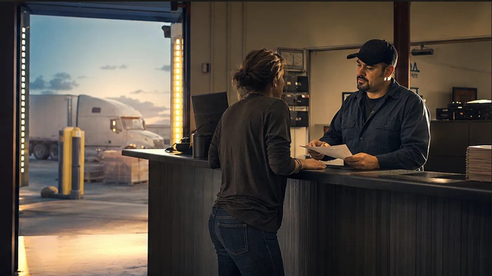

Confirm the customer, pickup, delivery, and timing.
Bring the contact, origin, destination, appointment window, and customer reference so the request starts with a usable record.

Capture the parties, lane, freight, equipment, proof, and timing before dispatch begins.
Open structured intake →Bring the contact, origin, destination, appointment window, and customer reference so the request starts with a usable record.
Include temperature, value, special handling, accessorials, and any cargo or insurance requirements that affect review.
Identify proof, seal, photo, POD, lumper, or delivery expectations before the quote and dispatch path begins.
This request entry is a preparation step, not a second marketing page. The working form keeps the request, temporary quote, and dispatch gate in one simulated portal record.